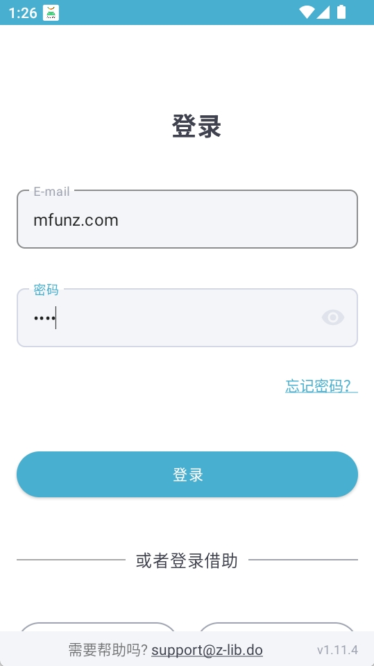
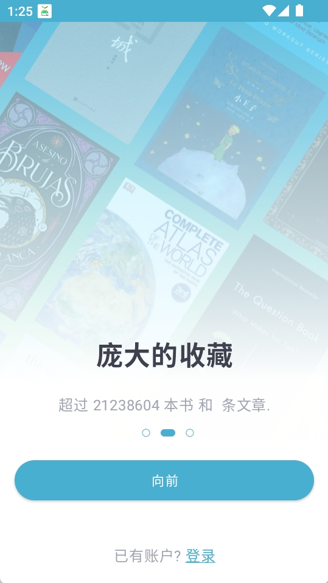

免费电子书库里它排第几——用了一年 zlib 的真实感受
同类工具不少，但能同时覆盖小说、学术、技术书且每日额度够用的不多。这篇对比评测从格式支持、阅读器衔接、安全可信度三个维度拆解它，帮你判断该不该装。
免费电子书这个类目，说大不大、说小不小——从小打小闹的论坛合集到量级百万级的公共库，我前前后后用过六七款。zlib 放在这个坐标系里，属于那种"不是最早、也不是唯一，但综合下来最顺手"的选项。这篇不炒情怀、不造神，只聊它真实能打、以及真实受限的地方。
先给一个定位：同类格局里它卡在中间层
市面上免费电子书库大致分三档。第一档是学术向单品站——专门盯某一个领域、内容精但覆盖面窄，找论文和专业书确实好用，想看个畅销小说就得另开一个窗口。第二档是综合大库但不做应用、或者应用做得难用——网页端功能齐全、但手机体验糟糕，或者搜索只认英文名、中译本基本失联。从zlib官网披露的数据看，zlib 卡在中间：量级够大（百万级）、覆盖小说学术技术书三类、而且有一个能看能用的手机应用。
它不是完美选项，但对于"想装一个 App 搞定 80% 找书需求"的人来说，确实是目前少数能站出来的。

三个差异化优势，都是实打实的体验提升
优势一：格式选得聪明，EPUB 优先不是口号
同类库的通病是"给你七八个格式让你自己选"——EPUB、PDF、MOBI、AZW3、FB2 堆在一起，对新手来说等于没给。zlib 倒不是少给格式，而是它从应用层就把优先级摆明了：默认推 EPUB，只有扫描版或画册才引导你选 PDF。
这个排序背后是有讲究的：EPUB 按屏重排、手机竖屏读不累、字号可随手指调，这几点对移动端读者是刚需。我试过用同类工具下载一本小说 PDF，手机上要么缩得字小如蚁、要么左右拖动读一行挪三次，体验差到直接放弃。zlib 直接把格式选对了，省掉了用户在格式堆里踩坑的成本。
下载前它还提供在线阅读——这招我非常吃。搜到书不急着下，先在线翻目录、抽样两章，确认版本翻译没问题再花额度。每天 10 本额度看起来不多，但配合"先翻后下"这个习惯，利用率至少能拉满七成。
优势二：应用只管找书藏书，不抢阅读器的活
很多同类工具总想一个 App 干完所有事——内置阅读器、做笔记、管书架、同步云备份……功能堆得满，但每一项都做得平庸。zlib 的定位反过来：它只做"图书馆"，不做"阅读器"。
这个取舍带来的好处是，它不强迫你用它的阅读界面。下载完的文件直接丢给你自己习惯的阅读器——ReadEra、多看、Calibre 都行。专业阅读器的批注、划线、书架管理、跨设备同步这些功能，zlib 一个都不碰，让你用自己顺手的那套。对于已经有固定阅读生态的人来说，这个设计反而是最尊重用户选择的。
衔接上也留了出口：下载完选择"用其他应用打开"，或者从阅读器里导入下载目录，两步就通。Kindle 用户更省心，可以跳过下载环节直接直发设备。

优势三：安全细节做得比同类到位
免费资源站普遍有一个问题：来源说不清、应用套壳泛滥。我之前装过一款同类工具，图标和官网一致但包名不对，跑起来偷偷请求广告域名，后来卸载了还留了残留进程。
zlib 在这点上的处理是公开透明的——它的zlib文档直接列了核对清单：包名、版本号、MD5，三项逐一对照。包名 com.positron_it.zlib 是固定标识，版本可以随渠道变但包名必须一致，这个逻辑对普通用户来说足够简单。安装包约 31.5 MB，大小明显偏小说明没下完整，删掉重下就行。这些步骤不是仪式感，是真有人栽过跟头。
它的取舍：为这些优势付出的代价
说了好的，也得说不好的。zlib 不是银弹，它也有真实的限制条件。
平台限制：目前只有安卓应用，安卓用户可从官方下载拿到最新安装包，iOS 用户只能走网页端，体验落差不小。网页端能搜能下但不能直发 Kindle、没有推送提醒。如果你是苹果全家桶用户，可能得再装一个安卓模拟器或者换设备。
每日额度：每天 10 本下载额度，对重度读者不够用，对轻度用户绰绰有余。额度用完的当天只能靠收藏功能把想读的书加进书单，等第二天重置再下。会员可以扩额度但价格不低，这笔账得自己算。
中译本书的搜索：虽然覆盖三类书，但中文译本的搜索不如英文原版精准，ISBN 和 DOI 搜索偶尔比书名搜索更靠谱。如果找冷门技术书的中译本，有时候得靠交叉搜索碰运气。
选购结论：什么样的人选它，什么样的人选别的
如果你是这些人：用安卓手机、想装一个 App 搞定 80% 找书需求、不折腾阅读器生态、愿意花两分钟核对一下安装包再装——zlib 是目前最值得装的选项。综合量级、覆盖度、应用体验、安全可信度这几个维度，它在同类里确实没有明显的短板。
如果你是这些人：纯学术论文需求（直接用学术专项库）、iOS 单设备用户（网页端体验打折）、每天下载量超过 10 本（得考虑会员方案或组合多个库）——zlib 可能不是你的最优解。每个类目都有专精的工具，zlib 赢的是综合而不是单点。
最后一句明确的推荐：想在手机上装一个能长期用、不会某天突然跑路的免费电子书应用，zlib 值得花那两分钟核对包名装一下。本站整理的安装包和使用说明同步发布在GitHub、Gitee、GitCode三个仓库，选你习惯的入口即可。